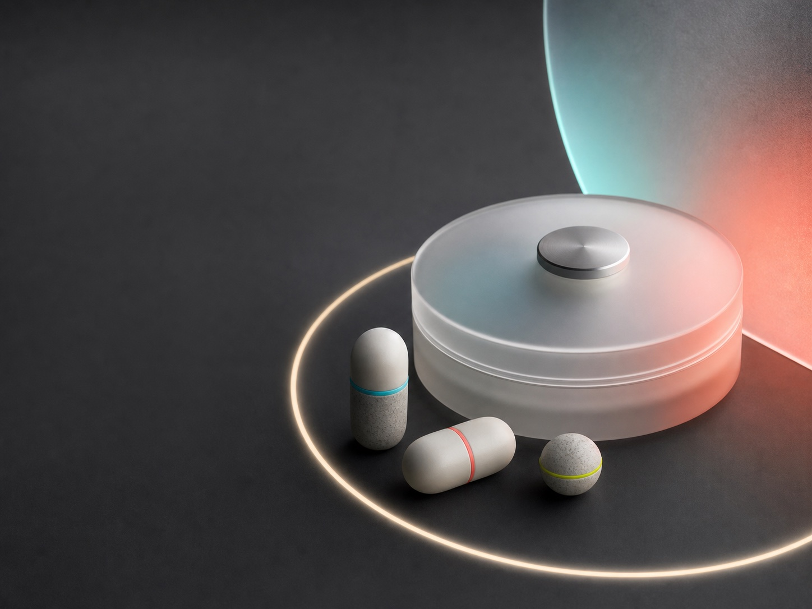
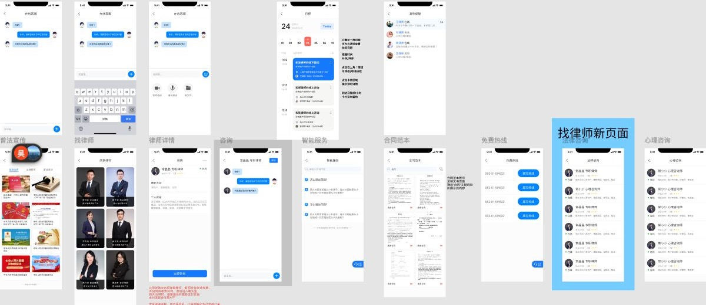
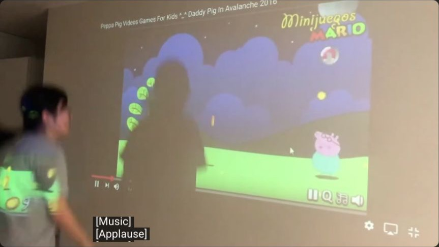
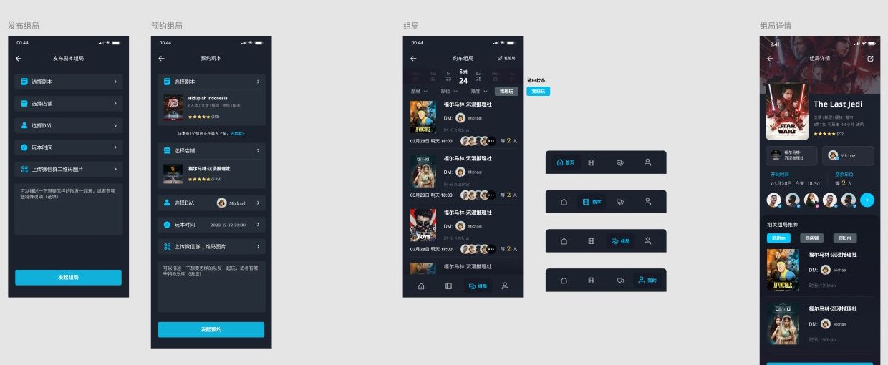
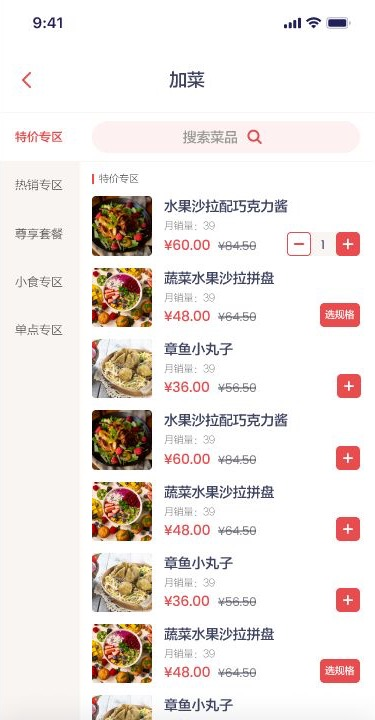
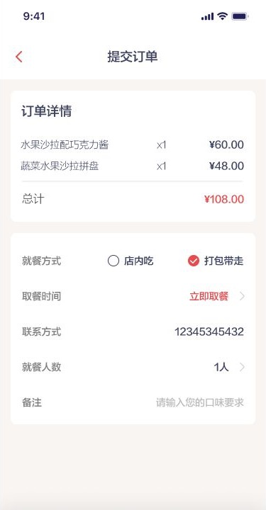
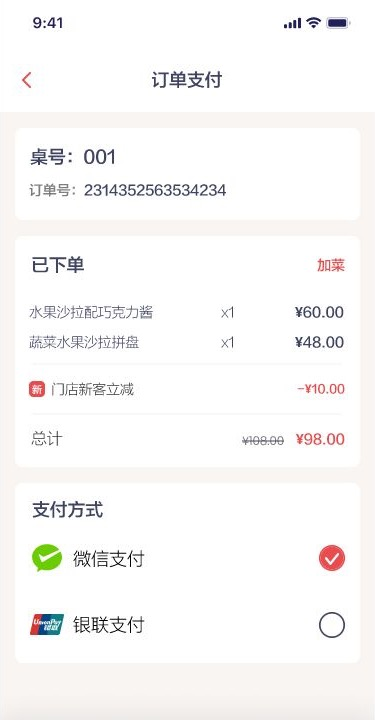

Concept & Direction
Opportunity framing, experience principles, scenarios, service flows, and a clear prototype brief.
Independent prototype & idea design practice / Sydney
I turn early ideas into experiences people can see, touch, test, and understand. The practice combines interaction design, responsible AI research, product thinking, and functional prototyping.
01 / Studio
From a rough question to a working proof: I use prototypes to reduce ambiguity, expose opportunities, and make better decisions earlier.
The studio works across digital products, smart objects, health technologies, public services, and experimental interactions. Each engagement is shaped around the question that needs answering, not a fixed deliverable.
My background spans more than seven years in UX/UI and product work, supported by current PhD research in human-computer interaction and responsible AI at the University of Technology Sydney.
Opportunity framing, experience principles, scenarios, service flows, and a clear prototype brief.
Interaction flows, high-fidelity interfaces, responsive experiences, and testable product demonstrations.
Connected objects, sensor interactions, Raspberry Pi builds, AI-assisted recognition, and multimodal feedback.
Interviews, surveys, usability studies, evaluation protocols, and evidence for the next iteration.
02 / Selected work
A / Research prototypes
Research-led systems for responsible AI, health, smart homes, and physical interaction.

A doctoral research prototype exploring where automation should stop and human control should begin in medication recognition, reminders, confirmation, and correction.

A touchable music and emotion-sharing object combining pressure, motion, and physiological sensing with light, sound, projection, and remote connection.


A recognition-enabled food monitoring concept connecting a Raspberry Pi camera, dietary guidance, mobile interaction, and technology acceptance research.
B / Systems & product delivery
Public legal services, factory operations, and travel-product workflows designed for real-world delivery.

An end-to-end public legal-service product connecting residents with legal information, lawyer consultation, appointments, document services, and community delivery.
View case study →
Production planning, order status, equipment monitoring, maintenance, and workflow configuration for timber automation operations.
View case study →
A desktop interface for travel bookings, customer operations, product updates, notifications, and tourism inventory.
View project →C / Interactive & commercial prototypes
Selected proof-of-concept work showing physical interaction, social mechanics, and complete mobile journeys.

A body-controlled Unity game connected to an Arduino-triggered physical reward.
Watch demo →
A dark mobile experience for publishing, booking, joining, and managing role-playing mystery sessions.
Open design →


A complete customer journey across menu selection, item options, checkout, payment, order history, and profile states.
Open prototype →Full archive
Animal Protector and Hi, Stranger now sit in a quieter archive instead of competing with the studio's current direction.
Explore archive03 / Method
Clarify the user, decision, risk, and assumption the prototype needs to expose.
Create the smallest convincing experience, from interaction flow to functional system.
Put the prototype in context, capture behaviour, and identify where trust or usability breaks.
Translate findings into design principles, priorities, specifications, and the next build.
04 / Founder profile
I am a PhD candidate in Computer Science at UTS researching responsible AI and trustworthy automation in smart-home health technologies. Before doctoral research, I worked across product management, UI/UX, public-service platforms, travel technology, and multimedia production.
05 / Start a conversation
Available for selected prototype and research collaborations
GitHub
github.com/liqianyouy
Sydney, Australia